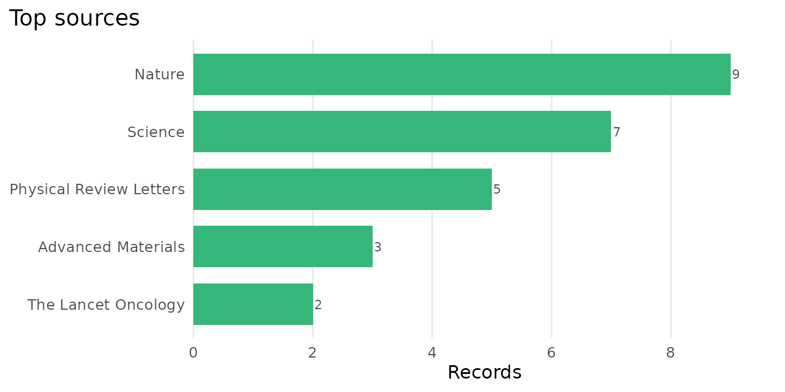
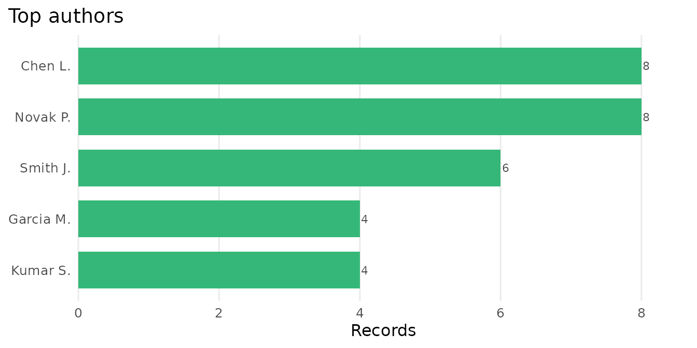
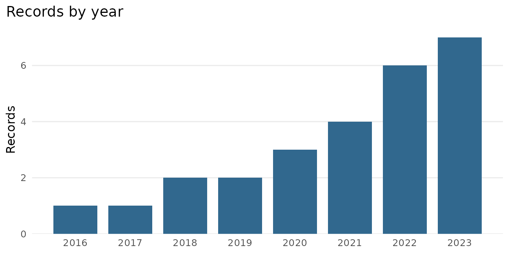
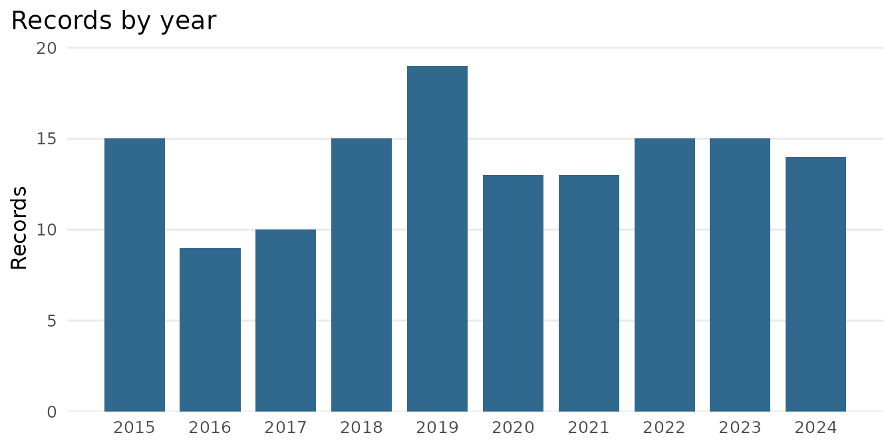
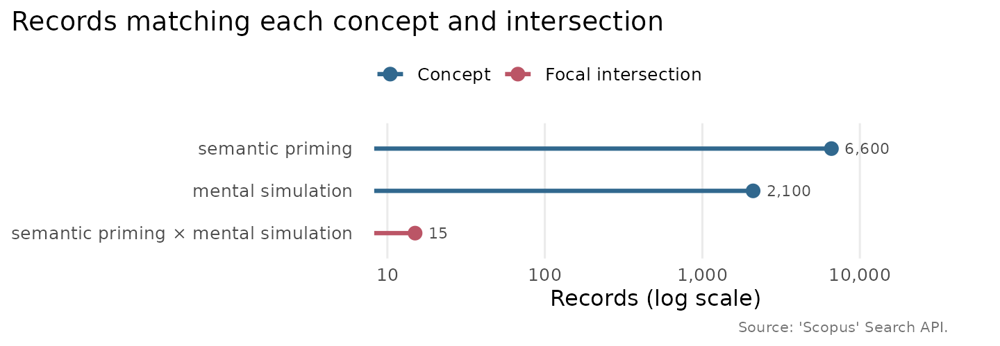

Analysing and visualising a literature
Source:vignettes/analysing-a-literature.Rmd
analysing-a-literature.RmdOnce a set of records is in hand, the package offers a small analysis layer that turns it into the figures a bibliometric study usually needs. The steps that contact the API are shown but not run; the rest run offline, on synthetic records built in the shape the API returns.
What is in a record set
scopus_top() tallies the most frequent sources or
authors. Author strings that hold several names are split, so each
contributor is counted once per record. The bundled
example_records keeps the package’s examples quick, but its
ten single-appearance records make for a flat tally, so here we
synthesise a slightly larger corpus and normalise it with
scopus_records(), exactly as a retrieval would.
lead <- rep(c("Chen L.", "Smith J.", "Garcia M.", "Kumar S.", "Tanaka H.", "Okafor N."),
times = c(8, 6, 4, 4, 2, 2))
raw <- list(entry = lapply(seq_along(lead), function(i) list(
`dc:identifier` = paste0("SCOPUS_ID:", 85100000000 + i),
`dc:title` = sprintf("Synthetic study %02d", i),
`dc:creator` = if (i %% 3 == 0) paste(lead[i], "Novak P.", sep = "; ") else lead[i],
`prism:publicationName` = rep(c("Nature", "Science", "Physical Review Letters",
"Advanced Materials", "The Lancet Oncology"),
times = c(9, 7, 5, 3, 2))[i],
`prism:coverDate` = sprintf("%d-06-01", rep(2016:2023, times = c(1, 1, 2, 2, 3, 4, 6, 7))[i]),
`citedby-count` = as.character((27 - i) * 3)
)))
records <- scopus_records(raw, query = "TITLE-ABS-KEY(synthetic corpus)")
scopus_top(records, by = "source")| value | n |
|---|---|
| Nature | 9 |
| Science | 7 |
| Physical Review Letters | 5 |
| Advanced Materials | 3 |
| The Lancet Oncology | 2 |
scopus_top(records, by = "author", n = 5)| value | n |
|---|---|
| Chen L. | 8 |
| Novak P. | 8 |
| Smith J. | 6 |
| Garcia M. | 4 |
| Kumar S. | 4 |
plot_scopus_top(scopus_top(records, by = "source"))
The same plot works on the author tally.
plot_scopus_top(scopus_top(records, by = "author", n = 5))
A record set also has an honest default view: autoplot()
draws its records per year. The same autoplot() generic
dispatches on scopus_trend and scopus_top
objects too, delegating to the plots above.
ggplot2::autoplot(records)
How a literature grows
scopus_trend() counts how many records match a query in
each year, which is the size of a literature over time. It issues one
count request per year, so it needs the API.
tr <- scopus_trend("graphene", years = 2004:2022, field = "TITLE-ABS-KEY")
plot_scopus_trend(tr)The result has a fixed shape, which we reproduce here to show the plot.
years <- 2004:2022
tr <- tibble::tibble(query = "TITLE-ABS-KEY(graphene)", year = years,
n = round(exp(seq(log(50), log(28000), length.out = length(years)))))
class(tr) <- c("scopus_trend", class(tr))
plot_scopus_trend(tr)
Where a niche sits
A study that crosses two or more fields is best introduced by sizing
those fields and their overlap: each parent literature may hold
thousands of records while their intersection holds a handful, which is
the niche the study occupies. scopus_intersections() counts
a named set of concepts and any requested intersections of them, at one
count request per row, so the whole landscape is as cheap as a few
scopus_count() calls. Concept values may be bare terms,
wrapped in field for you, or complete field-tagged
expressions, used exactly as given.
sets <- scopus_intersections(
concepts = c(
"semantic priming" = "semantic priming",
"mental simulation" = "mental simulation"
),
intersections = list(c("semantic priming", "mental simulation")),
field = "TITLE-ABS-KEY"
)
plot_scopus_intersections(sets, highlight = sets$label[sets$type == "intersection"])As above, the result has a fixed shape, which we reproduce here to show the plot. The lollipop chart uses a log-scale axis, so the small intersection stays legible beside its large parent fields, and the highlighted row draws the eye to the niche itself.
sets <- tibble::tibble(
label = c("semantic priming", "mental simulation",
"semantic priming × mental simulation"),
query = c("TITLE-ABS-KEY(semantic priming)",
"TITLE-ABS-KEY(mental simulation)",
"(TITLE-ABS-KEY(semantic priming)) AND (TITLE-ABS-KEY(mental simulation))"),
n = c(6600, 2100, 15),
type = c("concept", "concept", "intersection"),
size = c(1L, 1L, 2L),
members = c("semantic priming", "mental simulation",
"semantic priming; mental simulation")
)
class(sets) <- c("scopus_intersections", class(sets))
plot_scopus_intersections(sets, highlight = sets$label[3])
Reading the fuller record
The Search API returns a few fields per record. To read the abstract
and the fuller metadata for a record you already know,
scopus_abstract() calls the Abstract Retrieval API, by DOI
or ‘Scopus’ identifier. A batch is resilient, so an identifier that
cannot be found yields a row of NAs with a warning rather
than stopping the run.
ab <- scopus_abstract(c("10.1038/nature14539", "10.1103/PhysRevLett.116.061102"))The result is a tibble of class scopus_abstracts, one
row per identifier. To show its shape without a key, here is a stand-in
with the same columns. The abstract column holds prose far
too wide to typeset whole, so the columns are listed by name and the
identifying ones shown as a table.
ab <- tibble::tibble(
id = c("10.1038/nature14539", "10.1103/PhysRevLett.116.061102"),
scopus_id = c("85060000001", "84960000002"),
doi = c("10.1038/nature14539", "10.1103/PhysRevLett.116.061102"),
title = c("Deep learning",
"Observation of gravitational waves from a binary black hole merger"),
abstract = c("Deep learning allows computational models that are ...",
"On 14 September 2015 the two detectors of LIGO observed ..."),
publication = c("Nature", "Physical Review Letters"),
year = c(2015L, 2016L),
citations = c(42000L, 5400L)
)
class(ab) <- c("scopus_abstracts", class(ab))
names(ab)
#> [1] "id" "scopus_id" "doi" "title" "abstract"
#> [6] "publication" "year" "citations"
ab[, c("title", "publication", "year", "citations")]| title | publication | year | citations |
|---|---|---|---|
| Deep learning | Nature | 2015 | 42000 |
| Observation of gravitational waves from a binary black hole merger | Physical Review Letters | 2016 | 5400 |
substr(ab$abstract[2], 1, 40)
#> [1] "On 14 September 2015 the two detectors o"Beyond five thousand records
A single Search API query returns at most its first 5000 records
under the ordinary offset paging. When you need the whole of a larger
result set in one pass, scopus_fetch(cursor = TRUE) follows
the API’s cursor instead, which has no such ceiling.
recs <- scopus_fetch("TITLE-ABS-KEY(microplastics)", cursor = TRUE)
nrow(recs)
#> [1] 38374That query matched 38,374 records when this article was written (the
literature keeps growing), several times the offset ceiling, and the
cursor retrieves all of them in one call. The records then arrive in the
API’s deep-paging order rather than sorted by relevance, which is the
right trade for a complete harvest. This is the one-call alternative to
the year-partitioned plan in the Search plans and quota-aware
retrieval article: a plan keeps each cell under the ceiling and
preserves relevance order, whereas cursor = TRUE harvests
the whole set in a single pass. Reach for the plan when you want cached,
resumable cells, and the cursor when you want the complete set at
once.